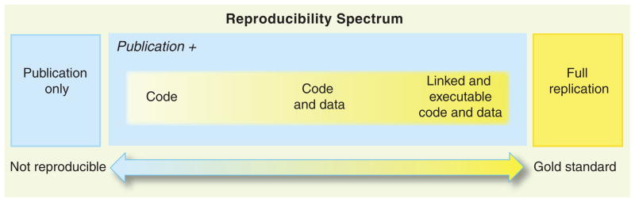

1 The truth
1.1 What is research?
Research is the process of searching for the universal truth. Research often involves exploring unknown territory and seeking out new information through methods such as attending conferences, conducting interviews and experiments, and reading related research. This process can lead to the discovery of valuable techniques or insights that address important issues in society or science. Zora Neale Hurston (2010) (see Figure 1.1) paraphrased it beautifully:
“Research is formalized curiosity. It is poking and prying with a purpose.” (Hurston, 2010)
Hurston, Z. N. (2010). Dust tracks on a road. HarperCollins.
1 Source: Photography is taken from Library of Congress: Prints & Photographs Division, Carl van Vechten Collection, Reproduction Number LC-USZ62-54231, see: https://www.loc.gov/pictures/item/2004663047/
Effective research is based on the principles of honesty, transparency and much more. A pithy yet profound quote from Scott Cunningham sums up this idea:
“True scientists do not collect evidence in order to prove what they want to be true or what others want to believe. That is a form of deception and manipulation called propaganda, and propaganda is not science. Rather, scientific methodologies are devices for forming a particular kind of belief. Scientific methodologies allow us to accept unexpected, and sometimes undesirable, answers.” (Cunningham, 2021, p. 10)
Cunningham, S. (2021). Causal inference: The mixtape. Accessed January 30, 2023; Yale University Press. https://mixtape.scunning.com/
1.2 Everybody is a scientist
2 Source: Image by macrovector on Freepik, see: https://www.freepik.com/free-vector/kindergarten-set-isolated-icons-with-toys-characters-kids-practicing-with-teacher-playing-games-vector-illustration_26760074.htm
Before I go into how empirical research can and should be conducted, I would like to assert that each of us is a researcher in some sense and that you don’t need a degree or a higher education to be a (good) researcher. Each of my four children (ages 2, 5, 6, and 8 (at the time of writing this)), for example, explores the world and learns something new every day. Even though none of my children is yet able to verify the novelty of their acquired knowledge and write it down in scientific form, I will claim that mine, like practically all children, are already little scientists. Why? Well, they explore unknown territory and search for information to discover new techniques that will make their lives pleasant, see Figure 1.2. Of course, they don’t attend conferences or read journals to do this. They have never heard terms such as ontology, epistemology, axiology, or quantitative and qualitative methods. They are using methods that they have mastered for their age. They interview me, my wife and all other people around and they conduct experiments. For example, all my children liked to throw plates, cutlery, cups and alike from the table when they were about one year old. At first the throwing was just an accident, but they quickly found out that each throw was followed by a sound when the object touched the stone floor. My first son, in particular, took great delight in making these sounds. He threw everything within reach to the ground and giggled with joy at the clink he made when the object hit the ground. Perhaps he was also enjoying the attention he was getting from us parents through these actions. In any case, the behavior annoyed us. Wiping food scraps off the floor is not a nice thing to do. Unfortunately, at that time my son did not accept any argument to refrain from throwing. Neither a stern look nor a definite “no” helped to stop this behavior. Too great was the joy at the relationship he had figured out, which was, “I throw something off the table and it always clangs beautifully loud.” So I started to do some research to figure out what I could do to stop him. The short answer I found can be summed up pretty well as “nothing”. There is practically no good method to change the behavior without possibly negatively influencing his early childhood development. The reason is he did some research and we should not suppress that. Besides nature and material research he did social research: He found out that things fall to the ground (gravity), that things break and make different sounds (material research), and that other people notice him when he throws things (social research).
Once, when we were eating at a friend’s house, my son (once again) threw everything off the table one after the other in unobserved moments. This time, however, it made no noise. The carpet under the table muffled everything. My son was irritated and at some point became really angry. Why? Well, his surely believed reality and his law “I throw something from the table and then it always clangs beautifully loud.” was falsified. Soon he understood that his law only had to be adapted a little. It was then: “I throw something from the table and it clangs then beautifully loudly if a stone floor is under me.” He repeated his experiments for a few more weeks, to check its validity. In the meantime he does other experiments trying to contribute to his own knowledge.
In general, the purpose of research is to find new knowledge or discover new ways to use existing knowledge in a creative way so as to generate new concepts, methodologies, inventions and understandings that -now or later- may be of some value for the human mankind. In simple terms, we aim to find something out. We aim to find a new law, a new relationship, a new insight. Or, we aim to challenge and revise existing insights on how the world works. You don’t need a degree to do that. All you need is interest, open-mindedness, and a willingness to revise your ideas about how the world works. The latter is perhaps the most important skill you need to be a good researcher. Otherwise, one is a narrow-minded, and bigoted person who is too proud to follow up an insight with a change of mind.
I myself have a quick and happy tendency to change my views because it is a statement of a fresh understanding. Here are two more quotes from Mr. Keynes (see Figure 1.3) and Mr. Adenauer (see Figure 1.4), two historically slightly more significant people than me that are along the same lines and should convince you that changing your mind is not a sign of weakness, but of strength. Especially in science, the willingness to change one’s mind is essential.
3 Source: Photography is public domain and stems from https://de.wikipedia.org/wiki/John_Maynard_Keynes#/media/Datei:Keynes_1933.jpg

“When the facts change, I change my mind. What do you do, sir?”4
4 This quote is often attributed to Keynes, but there is no clear evidence for it, see: https://quoteinvestigator.com/2011/07/22/keynes-change-mind/
5 Source: This photography from 1952 is public domain and stems from the Bundesarchiv, B 145 Bild-F078072-0004, Katherine Young, CC BY-SA 3.0 DE.

“What do I care about the rubbish I said yesterday? No one can stop me from getting smarter every day.” (“Was interessiert mich mein Geschwätz von gestern? … es kann mich doch niemand daran hindern, jeden Tag klüger zu werden.”)6
6 Freely quoted (and translated) from Weymar (1955, p. 521)
Weymar, P. (1955). Konrad Adenauer: Die autorisierte Biographie. Kindler.
1.3 Research is challenging
Simply trying something and seeing what happens, like my children do, is a research method that relies on luck and chance. Before I go into more grown-up ways of doing research, I want to emphasize that the role of chance and serendipity in research is often downplayed and not acknowledged. The most well-known example of such research is the discovery of penicillin by Alexander Fleming (see Figure 1.5). In 1928, Fleming was studying the properties of staphylococcus bacteria when he noticed that a mold called Penicillium notatum had contaminated one of his bacterial cultures. He noticed that the mold seemed to be inhibiting the growth of the bacteria, and he began to investigate this further. Eventually, he was able to isolate and purify the active ingredient in the mold, which he named penicillin, and he discovered that it had powerful antibiotic properties. This discovery revolutionized the field of medicine and has saved countless lives.
7 Source: Photography is public domain and stems from https://en.wikipedia.org/wiki/File:Synthetic_Production_of_Penicillin_TR1468.jpg

Doing something on purpose and observing how things respond to the action can be considered a research strategy. Acting like a child or just waiting for something to happen by chance can also be considered a research strategy, and of course this can contribute greatly to knowledge. However, it are a naïve and poorly targeted strategies to conduct research. There are more grown-up research methods that are targeting more precisely the gaps in our knowledge and speed up innovation in the field where progress is desperately needed.
The processes of research and observation of phenomena should aim to maximize the probability of discovering new and intriguing findings. They should also ensure a high degree of confidence in the validity of our findings and reduce the likelihood that they will be disproved shortly afterwards. Transparency, scientific collaboration and open competition are crucial for efficient progress in science.
Take, for example, the scenario of a fatal disease. A naïve approach to finding a cure might be to try different things and observe who falls ill and who dies or is cured, hoping to stumble upon a cure through serendipitous observation. However, this method is unlikely to be effective or practical. A more promising strategy would be to systematically study the disease and openly communicate research plans before they are implemented. This avoids unnecessary efforts and costs and accelerates the achievement of results.
For example, a laboratory should first seek to isolate the causative virus or bacterium in order to be able to grow and study it outside the danger to humans. Once this is done, we need a precise plan on how we can use all the available knowledge to cure the disease, protect people from infection, or help them survive the disease. In short, we need a strategic way to conduct research, i.e., a research strategy or design.
A research strategy is a general plan for conducting a study and a research design is a detailed plan for conducting the study. These words are frequently used interchangeably. A research strategy depends on many things including the question, the resources available, the current state of knowledge, the ambitions, whether quantitative or quantitative data are used, and what is considered to be the criteria of good research.
Before discussing some research strategies that can provide reasonable answers to certain types of questions, we should clarify how to ask a research question and what qualifies a research question.
1.4 Asking questions lika a good researcher
Unfortunately, there is no one research strategy suitable for all questions and, what is worse, there is still controversy about what constitutes good research and how to properly ask a research question. This debate is especially pronounced between researchers using quantitative data and statistical methods and those using qualitative information and methods:
Quantitative researchers are interested in both the causes of effects and the effects of causes. Experimental setups can help validate causes of effects and measure effects of causes. However, with observational data, investigating causes of effects is often challenging, so quantitative research tends to concentrate on quantifying the effects of causes.
Qualitative researchers also seek to determine the causes of effects but rely less on statistical inference. A qualitative data set not necessarily requires (large) random samples or structured data (all the data that you can structure in a spreadsheet) in general, but allows to analyze selective and unstructured data (that is data in form of audio, video, text, images and alike). These methods classify or interpret data to identify meaningful patterns. Qualitative researchers are more interested in the why and how of decision making, deeply examining people’s behaviors, beliefs, perceptions, experiences, attitudes, and interactions.
Moreover, there is an ongoing discussion about how to argue and reason in research. In that context, two stereotype approaches to reasoning are often distinguished:
- Inductive reasoning is a process of collecting data from various sources, such as interviews, surveys or observations, and then use this data to identify patterns, themes, or relationships that can form the basis of a new hypothesis or theory. The goal of these exploratory studies, is to generate new ideas or insights about a topic, rather than testing a specific hypothesis.
- Deductive reasoning is a process in which the researcher starts with a general theory or hypothesis with the goal to test a specific hypothesis or theory. In most cases, a combination of both inductive and deductive reasoning may be used to formulate the research question and to design the empirical identification strategy.
For this course, I avoid philosophical debates and instead focus on criteria commonly used to evaluate the quality of quantitative research.
Exercise 1.1 The Effect ch.1+2
Read chapter 1 and 2 of Huntington-Klein (2023) and answer the questions below. The book (see Figure 1.6) is freely available at https://theeffectbook.net and here is the link to chapter 1: https://theeffectbook.net/ch-TheDesignofResearch.html

Source: Huntington-Klein (2023)
- What is the main focus of the book the author is writing about?
- Philosophy of science
- Qualitative research methods
- Empirical research and quantitative methods to identify and measure causal effects
- Statistics
- What is the main challenge faced by quantitative empirical research, according to the author?
- Difficulty in obtaining accurate measurements
- Difficulty in interpreting measurements
- Difficulty in obtaining data that allows to answers the research question
- Difficulty in designing a research that gets a lot of attention
- What is the author`s main point about research questions?
- They should be well-defined, answerable, and understandable
- They should be simple and easy to answer
- They should be related to the world of traffic
- They should be related to the field of quantum mechanics
Huntington-Klein, N. (2023). The effect: An introduction to research design and causality. CRC Press. https://theeffectbook.net
1.5 Features of good research
In order to make you a competent researcher who does not have to wait for a lucky chance but has a clear strategy, let’s discuss the criteria of a good research. Before I do that, however, I must make a disclaimer: there is a lack of consensus on what constitutes high-quality research in social sciences. In my experience, the practical benefits of such a tedious discussion are quite small. All I like to put forward is that I believe that all social science disciplines such as sociology, anthropology, psychology, economics, business administration, and education using quantitative methods agree that good research should be replicable, reproducible, transparent, reliable, and valid.
1.5.1 Reliability and validity
A research design is a plan to examine information in a systematic and controlled way so that the results of the research are valid and reliable:
Validity refers to the accuracy and truthfulness of research findings. In other words, if a study is valid, it should measure what it is intended to measure and produce results that are representative of the population being studied. Validity is important because it helps to ensure that the conclusions drawn from a study are supported by the data and are not based on flawed or biased methods.
Reliability refers to the consistency and stability of research findings. In other words, if a study is reliable, it should produce similar results if it is repeated using the same methods and conditions. Reliability is important because it helps to ensure that the results of a study are not simply due to chance or random error.
Both reliability and validity are important considerations in research, and researchers strive to maximize both in their studies. However, it is important to note that it is often difficult to achieve both at the same time, and trade-offs may need to be made between the two.
Tip 1.1
A good research design should aim to minimize bias and maximize the reliability and validity of the research. It should also be appropriate for the research question being asked and the resources available to the researcher.
High reliability and low validity
An example of a study that has high reliability but low validity is a study that measures the weight of a group of people using a digital scale. If the scale is consistently accurate and produces the same weight measurements each time it is used, then the study has high reliability. However, if the scale is not calibrated correctly and produces inaccurate weight measurements, then the study has low validity.
Another example of a research design that has high reliability but low validity is a study that uses a highly reliable measurement tool, such as a standardized test, to measure a concept that is not directly related to the research question being asked. For example, a study that uses a standardized math test to measure students’ critical thinking skills may have high reliability because the test is consistently accurate and produces similar scores each time it is administered. However, the study may have low validity because the math test is not an appropriate tool for measuring critical thinking skills. As a result, the results of the study may not be representative of the students’ true critical thinking abilities.
High validity and low reliability
An example of a study that has high validity but low reliability is a study that asks people to self-report their eating habits. While the study may produce accurate and representative results about people’s eating habits, the self-reported data may vary from person to person and may not be consistent over time. As a result, the study has high validity but low reliability.
Another example of a study that has high validity but low reliability is a study that uses a highly valid measurement tool, such as a survey, to measure a concept that is directly related to the research question being asked. However, the study may have low reliability because the survey is not administered consistently or the responses are not accurately recorded. For example, a study that uses a survey to measure students’ attitudes towards school may have high validity because the survey is relevant to the research question and accurately measures the students’ attitudes. However, if the survey is not administered consistently or the responses are not accurately recorded, the study may have low reliability. As a result, the results of the study may not be representative of the students’ true attitudes towards school.
1.5.2 Internal and external validity
Coming back to my little son who threw everything within reach to the ground and giggled with joy at the clink he made when the object hit the ground. He identified a cause-and-effect relationship through an experiment in an controlled environment. His law “I throw something off the table and it always clangs” worked in our home. To our regret, it was replicateable and he really tried hard to falsify it. Moreover, his study was reasonable valid as his study design, conduct, and analysis could answer his research questions without bias (at least ignoring the other noises that his sibling and parents make coincidentally during his experiment). Scientist call this internal validity. However, he also found out that when he leaves our home, things are sometimes a bit different, for example, if there is a carpet under the table. Thus, his insights from his findings at out home can’t be generalized to other contexts, at least not without further specifications. Scientist call this external validity.
In general, internal validity examines whether the study design, conduct, and analysis answer the research questions without bias and external validity examines whether the study findings can be generalized to other contexts.
1.5.3 Replicability, reproducibility, transparency, and other criteria
Research must be repeatable for several reasons. For example, repeating a study with slightly adjusted parameters can improve its external validity and show that the conclusions are reliable. To enable replication, all important details necessary for drawing conclusions must be clearly stated—this is known as transparency. Additionally, everything in the study must be done in a way that allows the results to be checked for accuracy. Ideally, the results can be reproduced exactly as they were obtained in the original study. Sometimes, this is not possible; for example, you cannot survey the same individuals again, and even if you could, they would have aged and might be different. In such cases, it should at least be possible to replicate the research. This means using the same research strategy and design in a setting that differs only in unavoidable ways or by intentional changes. For example, you might interview a new group of people who match the original participants on key characteristics such as age.
In an empirical quantitative research study, for example, the data and the code written to process the data and analyze it should be accessible to everyone.
In a qualitative study, all sources of information should be stated, and the circumstances leading to a conclusion should be fully explained. For example, all transcripts of interviews conducted should be made available. The researcher should provide rich and detailed descriptions of the data and the context in which it was collected. Research should be provided with rich, nuanced, and multi-layered accounts of social phenomena by describing and interpreting the meanings, beliefs, and practices of the people being studied. That is known as thick description. Researchers typically employ a variety of methods such as participant observation, in-depth interviews, and document analysis, and they often use multiple sources of data to triangulate their findings. The goal is to provide a holistic and broad understanding of the phenomenon being studied, rather than a narrow view from the researcher’s perspective.
1.5.4 Other criteria
There are some other criteria of good research that are worth mentioning:
- Credibility: The research should be trustworthy and believable, and the researcher should provide detailed descriptions of the methods used to ensure transparency.
- Reflective practice: The researcher should engage in reflexive practice throughout the research process, which means to be critically aware of oneself, one’s own assumptions, and one’s own role in the research process.
- Triangulation: The researcher should use multiple methods, sources, and perspectives to increase the credibility of the findings (also see thick description above).
- Generalizability and Transferability: The conclusions drawn from looking at mostly unstructured data in qualitative research can hardly be generalized in a strict sense, as they depend crucially on the context of the object of study. For example, generalizability is essentially impossible in a qualitative case study, since everything depends on the specific situation of an individual, a company, or a group of people considered in the specific setting. This means that in a case study or interview, we may be looking at only a few or even a single observation that cannot be considered representative of the larger population, as generalizability does. Transferability, on the other hand, gives the reader the ability to transfer the findings into other contexts. The ability to transfer contextual findings to other cases is a goal of qualitative research, and the author of a study should attempt to offer the information in a way that allows the reader to transfer the findings to the setting or situation with which he or she is familiar.
1.6 The role of resources, data and ethics
There are several types of research designs, including experimental designs, quasi-experimental designs, and observational designs. Each of these designs took advantage of various empirical methods and statistical procedures. We will discuss some of them later on. The choice of research design, of course, should depend on the research question being asked, the resources available, and the type of data that is being collected. The research design should also take into account any ethical considerations that may be relevant to the research. The research design should be chosen so that it is well suited to answer the research question. For example, if one is interested in the question “Why do some people get sick with a certain disease and others do not?” then an observational study design to determine possible causes of effect may be appropriate. These identified potential causes should then be verified followed by an experimental study. Relatively, a statistical analysis should be used which would allow the effects of causes to be evaluated. The aim should be to identify necessary and sufficient circumstances to develop a disease. Also circumstances should be described that favor a disease.
If the question is a “how” question, for example, “How do parents feel when their child throws everything off the table?” then interviews might be an appropriate study design. If available resources such as time, funding, and staff are limited, you might also consider conducting an (online) survey in which parents are asked standardized questions about their feelings. In any way, the chosen research design must be feasible given the resources available.
In answering a question, a researcher should know, state, and discuss all the assumptions and unexamined beliefs that led him to his conclusion. However, since resources for conducting and explaining research are limited, special attention should be paid to what are called critical assumptions. These are assumptions that must be true in reality, otherwise the research is meaningless. Therefore, researchers should make great efforts to identify and validate these assumptions.
The type of data that is being collected is another important factor to consider when choosing a research design. Different types of data, such as quantitative data, qualitative data, or a combination of both, may require different methods of collection and analysis. For example, quantitative data, such as numerical data, can be collected through methods such as surveys and analyzed using statistical techniques, whereas qualitative data, such as interview transcripts, may require more interpretive methods of analysis.
Finally, the researcher should also take into account any ethical considerations that may be relevant to the research. For example, if the study involves human subjects, the researcher must ensure that the study is conducted in accordance with ethical principles such as informed consent and confidentiality. Additionally, the researcher should ensure that the potential benefits of the study outweigh any potential risks to the subjects.
1.7 Scientific standards
While we have already addressed essential characteristics of good research such as validity and reliability see 1.5, we have not explicitly discussed how to recognize high-quality research in academic publications.
The quality of research depends largely on the honesty of the researcher and the transparency of the methods used. Although there is no absolute measure of honesty, certain indicators can provide some insight. For example, the reputation of the researcher, the institution with which he or she is associated and the credibility of the publisher, editor or journal can serve as helpful pointers. If a researcher is highly regarded in the academic world or in public life, he has much to lose by compromising his integrity. Unfortunately, this logical argument does not exclude the possibility that even respected individuals may occasionally engage in dishonest practices. History has shown that this can happen. Nevertheless, the more someone has to lose by being dishonest, the less likely they are to cheat, plagiarize, or falsify data and results, respectively.
A clear empirical methodology forms the foundations of any empirical research work. However, to ensure the wide dissemination of a study, two aspects are crucial: accessibility and dissemination. Nowadays, public accessibility of a paper is relatively easy to achieve because anyone can upload their work online to ensure its availability. Dissemination, however, is more complex. While there are various strategies to increase the popularity of a paper, the traditional and arguably most effective method is to publish the paper in a high-impact journal or a popular journal with a large readership. The successful placement of a paper in such journals is almost an art form. The paper must fulfill several criteria as well as possible: a sound methodology, a clear contribution, thematic relevance and a compelling text that appeals to the journal’s readership are just some of the key benchmarks.
How can you learn to publish a paper successfully? I think that it is crucial to study papers that have gained recognition and make an effort to recognize the reasons for their success. Doing so sharpens your writing skills, improves your perceptiveness as a researcher, and helps you to select important research topics and to design research projects more efficiently. In other words, you should become familiar with the standard of science and their media.
Prestigious journals like the American Economic Review and the Journal of Economic Literature, published by the American Economic Association (AEA), have refined and enhanced their guidelines over time. These rules are often regarded as a benchmark in academic publishing, not necessarily because they set the highest possible standards, but because they strike a balance that takes into account the practical realities faced by researchers, reviewers, and editors. Moreover, readers often prefer a swift review process, too, because they want papers that connect with current events. In that respect, it’s important to acknowledge the inherent trade-off journals must navigate: stringent standards can slow the pace of research and publication. This is particularly critical in fields like economics and business, where timely insights can significantly impact politics and society, addressing urgent needs.
This section looks at the AEA’s publishing standards. The path to publication with the AEA, particularly for empirical research, has changed considerably and is now governed by strict criteria. It is imperative that authors familiarize themselves with the key considerations and guidelines for submitting empirical research to an AEA journal. Although standards may vary across disciplines, the AEA’s exacting standards have influenced a wide range of social science journals. Engagement with these standards is invaluable as it provides guidance in designing and planning research that meets these rigorous requirements.
While each AEA journal has its specific focus and requirements, all aim for integrity, clarity, and replicability of empirical research. Authors should start by carefully reviewing the author guidelines for their targeted journal, paying close attention to any specific mandates regarding empirical work. For Randomized Controlled Trials (RCTs), for example, a registration is required for all applicable submissions prior to submitting, see RCT Registry Policy.
Tip 1.1: The AEA’s registry for randomized controlled trials
Visit www.socialscienceregistry.org and inform yourself about some registered RCTs.

The AEA has placed a significant emphasis on the transparency and replicability of empirical research with the objective of ensuring that the empirical results can be fully replicated (see Figure 1.7). But why is replicability so crucial? Well, trust is good, control is better. Or, as Peng (2011, p. 1226) put it:
Peng, R. D. (2011). Reproducible research in computational science. Science, 334(6060), 1226–1227.
“Replication is the ultimate standard by which scientific claims are judged. With replication, independent investigators address a scientific hypothesis and build up evidence for or against it. The scientific community’s “culture of replication” has served to quickly weed out spurious claims and enforce on the community a disciplined approach to scientific discovery.” the Authors are required to ensure that their data and methodologies are openly available and clearly described, allowing other researchers to replicate their results. This commitment to transparency extends to the publication of data sets, code, and detailed methodological appendices, which must accompany the submitted manuscript.
Table 1.1 is taken from Nosek et al. (2015) and it breaks down how scientific journals ask researchers to follow more strict rules, from Level 0 to Level 3, across eight different important categories. All these standards follow the objective to come closer to the gold standard shown in Figure 1.7.
Nosek, B. A., Alter, G., Banks, G. C., Borsboom, D., Bowman, S. D., Breckler, S. J., Buck, S., Chambers, C. D., Chin, G., Christensen, G., et al. (2015). Promoting an open research culture. Science, 348(6242), 1422–1425.
| Level 0 | Level 1 | Level 2 | Level 3 |
|---|---|---|---|
| Citation Standards | |||
| Journal encourages citation of data, code, and materials—or says nothing. | Journal describes citation of data in guidelines to authors with clear rules and examples. | Article provides appropriate citation for data and materials used, consistent with journal’s author guidelines. | Article is not published until appropriate citation for data and materials is provided that follows journal’s author guidelines. |
| Data Transparency | |||
| Journal encourages data sharing—or says nothing. | Article states whether data are available and, if so, where to access them. | Data must be posted to a trusted repository. Exceptions must be identified at article submission. | Data must be posted to a trusted repository, and reported analyses will be reproduced independently before publication. |
| Method Transparency (Code) | |||
| Journal encourages code sharing—or says nothing. | Article states whether code is available and, if so, where to access them. | Code must be posted to a trusted repository. Exceptions must be identified at article submission. | Code must be posted to a trusted repository, and reported analyses will be reproduced independently before publication. |
| Material Transparency | |||
| Journal encourages materials sharing—or says nothing. | Article states whether materials are available and, if so, where to access them. | Materials must be posted to a trusted repository. Exceptions must be identified at article submission. | Materials must be posted to a trusted repository, and reported analyses will be reproduced independently before publication. |
| Design Transparency | |||
| Journal encourages design and analysis transparency or says nothing. | Journal articulates design transparency standards. | Journal requires adherence to design transparency standards for review and publication. | Journal requires and enforces adherence to design transparency standards for review and publication. |
| Preregistration: Study | |||
| Journal says nothing. | Journal encourages preregistration of studies and provides link in article to preregistration if it exists. | Journal encourages preregistration of studies and provides link in article and certification of meeting preregistration badge requirements. | Journal requires preregistration of studies and provides link and badge in article to meeting requirements. |
| Preregistration: Analysis Plan | |||
| Journal says nothing. | Journal encourages preanalysis plans and provides link in article to registered analysis plan if it exists. | Journal encourages preanalysis plans and provides link in article and certification of meeting registered analysis plan badge requirements. | Journal requires preregistration of studies with analysis plans and provides link and badge in article to meeting requirements. |
| Replication | |||
| Journal discourages submission of replication studies—or says nothing. | Journal encourages submission of replication studies. | Journal encourages submission of replication studies and conducts blind review of results. | Journal uses Registered Reports as a submission option for replication studies with peer review before observing the study outcomes. |
Besides adhering to the guidelines summarized in Table 1.1, authors should also:
- Justify their choice of methodology: The paper should clearly explain why the chosen method is appropriate for the research question at hand.
- Detail the analytical process: From data collection to analysis, each step should be meticulously detailed, allowing for the study’s replication.
- Address potential limitations: No empirical study is without its limitations. Authors should openly discuss these, including any biases, measurement errors, or external factors that may impact the results.
While statistical significance is a key metric for empirical analysis, the AEA also places a strong emphasis on the economic relevance and implications of the findings. Authors should not only present statistically significant results but also explain their economic significance.
The AEA employs a rigorous double-blind peer review process that ensures that submissions are peer-reviewed without revealing the identity of the authors or reviewers. The editor of the respective journal is responsible to manage the process which involves identifying qualified reviewers and forwarding the paper to them for evaluation. This procedure serves to ensure the integrity and impartiality of the evaluation. Authors should be prepared to receive feedback and constructive criticism, which often requires a revision of the manuscript. A willingness to engage constructively with this feedback is crucial to refining the work and improving its chances of publication. Of course, this process has its disadvantages: It is slow and imposes a significant workload on both reviewers and editors. Considering the vast number of publications each year—a number that has significantly increased over the last few decades (see Paldam, 2021) and the fact that the guidelines of many journals have become stricter during the same period, it raises a question. Have researchers become miraculously more productive, or are they simply working more?
Paldam, M. (2021). Methods used in economic research: An empirical study of trends and levels. Economics, 15(1), 28–42.
Tip 1.2: AEA Policies
1.8 Avoid low-quality sources
This section aims to highlight key elements for identifying problematic or misleading literature, but it is not exhaustive.
Writing a successful is an art without strict rules. However, you should adapt your writing to the reader’s expectations, using appropriate arguments, graphs, tables, and references. By studying credible sources, you can learn proper practices and conventions. Unfortunately, many authors rely on low-quality work, resulting in a poorly written papers. Thus, consider the quality of the resources you read and cite very carefully. Avoid predatory journals and be cautious of information from online blogs, magazines, and other media without a peer-review process. Aim to find more reliable sources from reputable institutes with a reliable peer-review process and non-profit motivations. Do not simply rely on the first Google search result or the selection provided by Google Scholar, as listing there does not guarantee reliability or quality. Don’t cite articles and books published by vanity presses. Identifying predatory journals can be challenging, but there are some clear indicators of dubious quality. Here is a checklist to help determine if a source is valid:
- Listing in Beall’s List: Check if the journal or publisher is included in Beall’s List or on TUM’s website.
- Open-Access status: Determine if the paper or journal is open-access. If it is, consider who is financing the journal. Predatory journals often require authors to pay for publication, and their peer-review process is often questionable.
- Publisher reputation: Some large publishers serve as hubs for conferences and organizations to publish journals and articles. While a few journals from publishers like IEEE, ACM, scirp.org, SciEP, Science of Europe, and MDPI are of acceptable quality due to rigorous editorial standards, most journals are of low quality or predatory. Avoid these publishers or at least approach them with caution and consult your supervisor if in doubt.
- SJR ranking: Is the journal listed in the SCImago Journal Rank and how is their ranking?
- Questionable impact factor lists: Is the journal listed in dubious impact factor lists? The Scientific Jourrnal Impact Factor (sjifactor.com), for example, claims to determine the impact of a journal. However, the service provider remains anonymous, with no masthead, address or contact information other than an e-mail. This anonymity, which is against the law in many countries, including Europe, casts doubt on the quality and validity of the service, especially as the methodology is not transparent.
By following these guidelines, you can ensure that the sources you use and cite in your work are of high quality and reliability. However, note that there is no rule without an exception. For example, it can sometimes be appropriate to cite a post from an online blog. However, you should provide a clear reason for doing so. If you are uncertain, consult your supervisor.
1.9 Feynman on scientific method


Richard P. Feynman was an American theoretical physicist. At the age of 25, he became a group leader of the Manhattan Project in Los Alamos, received the Nobel Prize in Physics in 1965, authored one of the most famous science books of our time (Surely You’re Joking, Mr. Feynman!) (Feynman, 1985), and remains a hero for many enthusiasts, educators, and nerds (see Figure 1.8). In 1964, more than half a century ago, he gave a good description of scientific method which is still worth considering. Watch the video shown in Figure 1.9.
Feynman, R. P. (1985). Surely you’re joking, Mr. Feynman! Adventures of a curious character. W.W. Norton.
Source: Youtube
Here is a transcript of his lecture:
“Now, I’m going to discuss how we would look for a new law. In general, we look for a new law by the following process. First, we guess it.
Then we—well, don’t laugh. That’s really true. Then we compute the consequences of the guess to see if this law that we guessed is right. We check what it would imply and compare those computed results to nature. Or we compare it to experiments or experiences, comparing it directly with observations to see if it works.
If it disagrees with experiment, it’s wrong. And that simple statement is the key to science. It doesn’t matter how beautiful your guess is. It doesn’t matter how smart you are, who made the guess, or what his name is; if it disagrees with experiment, it’s wrong. That’s all there is to it.
It’s therefore not unscientific to take a guess, although many people outside of science think it is. For instance, I had a conversation about flying saucers a few years ago with laymen.
Because I’m a scientist, I said, ‘I don’t think there are flying saucers.’ Then my antagonist said, ‘Is it impossible that there are flying saucers? Can you prove that it’s impossible?’ I said, ‘No, I can’t prove it’s impossible. It’s just very unlikely.’
They replied, ‘You are very unscientific. If you can’t prove something is impossible, then how can you say it’s unlikely?’ Well, that’s how science works. It’s scientific to say what’s more likely or less likely, rather than attempting to prove every possibility and impossibility.
To clarify, I concluded by saying, ’From my understanding of the world around me, I believe it’s much more likely that the reports of flying saucers are the result of the known irrational characteristics of terrestrial intelligence rather than the unknown rational efforts of extraterrestrial intelligence. It’s just more likely, that’s all. And it’s a good guess. We always try to guess the most likely explanation, keeping in the back of our minds that if it doesn’t work, we must consider other possibilities.
[…]
Now, you see, of course, that with this method, we can disprove any specific theory. We can have a definite theory or a real guess from which we can compute consequences that could be compared to experiments, and in principle, we can discard any theory. You can always prove any definite theory wrong. Notice, however, we never prove it right.
Suppose you invent a good guess, calculate the consequences, and find that every consequence matches the experiments. Does that mean your theory is right? No, it simply has not been proved wrong. Because in the future, there could be a wider range of experiments, and you may compute a broader range of consequences that could reveal that your theory is actually incorrect.
That’s why laws, like Newton’s laws of motion for planets, have lasted for such a long time. He guessed the law of gravitation, calculated various consequences for the solar system, and it took several hundred years before the slight error in the motion of Mercury was discovered.
[…]
I must also point out that you cannot prove a vague theory wrong. If the guess you make is poorly expressed and rather vague, and if the method you use to compute the consequences is also vague—you aren’t sure. You might say, ‘I think everything is due to [INAUDIBLE], and [INAUDIBLE] does this and that,’ more or less. Thus, you can explain how this works. However, that theory is considered ‘good’ because it cannot be proved wrong.
If the process for computing the consequences is indefinite, then with a little skill, any experimental result can be made to fit—at least in theory. You’re probably familiar with that in other fields. For example, A hates his mother. The reason is, of course, that she didn’t show him enough love or care when he was a child. However, upon investigation, you may find that she actually loved him very much and everything was fine. Then the explanation changes to say she was overindulgent when he was [INAUDIBLE]. With a vague theory, it’s possible to arrive at either conclusion.
[APPLAUSE]
Now, wait. The cure for this is the following: it would be possible to specify ahead of time how much love is insufficient and how much constitutes overindulgence precisely, enabling a legitimate theory against which you can conduct tests. It’s often said that when this is pointed out regarding how much love is involved, you’re dealing with psychological matters, and such things can’t be defined so precisely. Yes, but then you can’t claim to know anything about it. [APPLAUSE]
Now, I want to concentrate for now on—because I’m a theoretical physicist and more fascinated with this end of the problem—how you make guesses. It is irrelevant where the guess originates. What matters is that it agrees with experiments and is as precise as possible.
But, you might say, that’s very simple. We just set up a machine—a great computing machine—with a random wheel that makes a succession of guesses. Each time it guesses hypotheses about how nature should work, it computes the consequences and compares them to a list of experimental results at the other end. In other words, guessing is a task for simpletons.
Actually, it’s quite the opposite, and I will try to explain why. […]
1.10 How social scientists do research
Economics and business administration are a social sciences. When social scientists are trying to …
- …change the world, they act as policy advisors.
- …explain the world, they are scientists.
Social scientists distinguish between two types of statements:
A positive statement attempts to describe the world as it is and can be tested by checking it against facts. In other words, a positive statement deals with assumptions about the state of the world and some conclusions. The validity of the statement is verifiable or testable in principle, no matter how difficult it might be.
A normative statement claims how the world should be and cannot be tested. Normative statements often contain words such as have to, ought to, must, should, or non-quantifiable adjectives like important, which cannot be objectively measured. Consequently, normative statements cannot be verified or falsified by scientific methods.
The task of social science is to discover positive statements that align with our observations of the world and enable us to understand how the world operates. This task is substantial and can be broken into three steps:
- Observation and measurement: Social scientists observe and measure economic activity, tracking data such as quantities of resources, wages and work hours, prices and quantities of goods and services produced, taxes and government spending, sales and profits, and the volume and price of traded goods.
- Model building
- Testing models
Research methodologies in social science often blend the inductive and deductive approaches. Inductive reasoning builds theories, while deductive reasoning tests existing ones. It’s a methodical interplay between creation and scrutiny in the realm of research.
When scientists want to act as political advisors, they are often asked to make normative statements. From an ethical point of view, however, it is difficult to make normative statements without including subjective judgments, which can make such statements unscientific. Therefore, scientists should rely on moral criteria to justify their judgments and normative statements.
Among these criteria, the Pareto criterion is one of the best known and most widely used. It states that only changes that benefit at least one individual without harming others can be considered improvements. This concept is often used in economics to discuss the distribution of resources, welfare economics and policy making.
1.11 Glossary
- Generalizability: The extent to which the results of a study can be applied to other populations or contexts.
- Internal validity: The degree to which a study’s results can be attributed to the specific variables or factors being studied, and not to other extraneous factors.
- External validity: The degree to which a study’s results can be generalized to other populations or contexts outside of the specific sample or setting of the study.
- Quantitative data: Data that can be measured and quantified.
- Qualitative data: Data that cannot be easily measured or quantified.
- Quantitative research: A research approach that uses statistical methods and experiments to determine the causes of effects, to quantify the effects of causes, or to describe data.
- Qualitative research: A research approach that uses unstructured data and methods to examine, for example, people’s behavior, beliefs, and experiences in depth, rather than quantifying results.
- Reflective Practice: A form of self-evaluation used to analyze one’s own thoughts and actions.
- Reliability: The consistency of a study’s results to produce similar results when repeated.
- Research design: A detailed plan for conducting a study, frequently used interchangeably with research strategy.
- Research method: A procedure used to conduct a study or investigation to gain knowledge or understanding about a particular topic.
- Research question: A question or problem that a study aims to answer or solve.
- Research strategy: A general plan for conducting a study, frequently used interchangeably with research design.
- Replicability: The ability of a study to be repeated with new data.
- Reproducibility: The ability of a study to be repeated and produce the same results, often used interchangeably with replicability.
- Serendipity: The role of luck and unexpected events in research.
- Thick Description: A detailed narrative used to explain a situation and its context.
- Credibility: A quality criterion in qualitative research, which refers to confidence in the truth value of the data and interpretations of them.
- Transparency: The degree to which a study’s methods and data are easily accessible and understandable to others, allowing for the study to be independently evaluated and replicated.
- Triangulation: A method used in qualitative research to verify the accuracy of data by combining multiple sources of information.
- Validity: The degree to which a study measures what it is intended to measure, and the extent to which the results of the study can be considered accurate and meaningful.
- Structured data: Data that can be easily organized and analyzed in a structured format, such as a spreadsheet.
- Unstructured data: Data that cannot be easily organized and analyzed in a structured format, such as text, images, and audio.